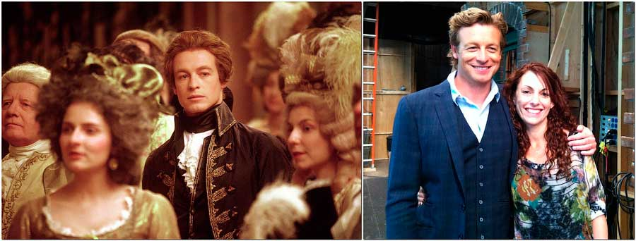

Предисловие или православие

Предисловие (предиславие, предславие, православие)… или альтернативная история Руси в совремённых портретах.
Любая история хороша только тогда, когда её можно изобразить в портретах, или в виде кинофильма. Ни того, ни другого у нас о начальном периоде нашего государства у нас нет. Но есть летописи, в которых описаны некоторые события, и есть огромное количество их трактовок. Каждый человек видит мир своими глазами, но некоторые видят совсем не то, что читают. В советской школе у учителей для нерадивых учеников на эту тему была хорошая пословица: «смотришь в книгу, видишь фигу». Фига, фиговое дерево, фиговый листок – то, чем прикрывают интимное место при изображении обнаженного человека.
В данном разделе не будет много цитат, больше события и их графическое изображение (иногда без фигового листка). Причем из разных фильмов, большей частью исторических и зарубежных.
Параллельно с нами рядом в Европе жили другие народы, я уже не говорю про Восточную Римскую империю, бывшей как образец для подражания (но не преклонения). Могут ли гордые независимые народы кому-то кланяться? Могут, но только перед теми, кого уважают и почитают.
В западных странах снимают яркие и красочные фильмы про своих предков, и их можно сравнить с нашими. Ведь они встречались, дружили, воевали между собой и часто женились, потому что жили практически в одно время. Таможни не было, государственных границ тоже. Например, невесткой князя Всеволода была женщина из Скандинавии, невесткой Святослава была византийка, а Изяслава немка. Уверен, что никто из читателей нашего сайта не знает, что у английского короля Ричарда Львиное Сердце (его отец был Генрих II) была бабушка Матильда, жена Генриха V; а Генрих 5 был сыном Генриха IV, который был двоюродным братом Оды Штадентской (жены Святослава Ярославича), и этот же самый Герних 4 был женат вторым браком на Евпраксии (дочери Всеволода Ярославича*) которую держал в тюрьме и принуждал участвовать в сексуальных оргиях и чёрных мессах (сатанинских обрядах). Не совсем понятно: как Генрих II (второй) может быть сыном Генриха V (пятого)? Император Священной Римской империи (участвующий в чёрно-магических ритуалах) был тестем младшего сына Ярослава (Георгия I) Мудрого. Тёща основателя династии Ольденбургов (будущих немецко-русских Романовых) была так же и тещёй князя Святослава и соответственно сватьей Ярослава Новгородского (потомков настоящих русско-византийских Романовых). В истории нашей соседней Абхазии тоже есть два Георгия, причем Георгий I как ни странно внук Георгия II.
Нет желания узнать, кто были женщины в нашем прошлом?
Крайнее удивление вызывает полулегендарный дед Ирины Олафовны (условной мачехи Святослава) по имени Эрик VII Победоносный, который жил чуть позже Константина VII. Как попасть от Константина седьмого к первому понятно (есть документы), а вот от седьмого Эрика куда идти вниз по школе времени?
В том, самом раннем периоде, не было понятия гражданства, международных виз и запретов на общение с соседними народами. Поэтому ни что не мешает провести аналогию, не в смысле черных оргий немецкого императора или численного состава «шведской семьи», когда никто не знает где чей папа. А в смысле сравнения как было у нас, и как у них в плане культуры взаимоотношения мужчины и женщины.
Русов всегда считали сильными и ловким и воинами (даже сейчас наше оружие пользуется спросом в других странах, как и русские женщины красавицы). А изображают их как… даже сложно подобрать нужное слово.
Меня всегда мучил ещё один вопрос: кто были невестки Рогнеды (Анастасии) и её внучки? Три поколения первых Полоцких князей не имеют жен, и это очень странно! Есть такая замечательная песня «Три сестры» Россия, Беларусь, Украина. Кто из них старшая? И были когда-то три* брата: Изяслав Полоцкий, Ярослав Новгородский, Мстислав Тмутараканский. А тут кто старший? Традиция на Руси предполагала, что старший брат руководит, а младшие ему помогают.
Человек уверенно стоит на двух ногах – это мама и папа. Вам не кажется, что мы хромаем по истории не просто так, потому что одну ногу нам летописцы отрезали, а вторую заменили на «скандинавский» протез? И к тому же у нас нет части древнего знания о понятии семьи и рода, в доступном и понятном виде, как в хрестоматии.
Хрестоматия — это учебно-практическое издание, содержащее систематически подобранные литературно-художественные, официальные, научные и иные произведения или фрагменты из них, составляющие объект изучения.
Хрестоматия, хрестная мать, крестная мать, мать Христа. Человек стоит на двух, но табуретка на которой он сидит, стоит уже на четырех. У каждого человека есть родители непосредственные (родившие) и крестные (воспитывающие) и т.д. И у каждого человека есть две бабушки и два деда (4 человека). Иногда столяр делает табуретку на трёх ножках, для экономии материала. Жили были два брата/акробата (или две сестры) у каждого было по жене (мужу), у каждого было по сыну (дочери). Сколько человек будет такая семья для «экономии места в дому»? Братья были не акробаты, а воины в дружине князя. Один из братьев погиб… У одной из сестёр сгорел дом при набеге варваров (варягов)… Что делать этим обездоленным людям? Так сколько жен или мужей было на Руси у каждого человека? Скорее всего было столько, сколь требовали обстоятельства того непростого и жестокого нравами времени.
Если мы в конце IX века приняли крещение, то где имена наших крестных матерей и отцов?
Сегодня экраны наших телевизоров переполнены сценами насилия, жестокости, секса и всё это разбавлено огромным количеством дополнительной негативной информации. Ни министерство культуры, ни церковь, ни сами люди не протестуют против такого вида СМИ. А если и возмущаются, то государство этого не слышит, потому что на экранах все больше и больше пропагандируют «антиразумный» образ жизни современного человека, разрушающий его психику и сознание. Я уже не говорю про доступный всем интернет. Из этого интернета я буду брать изображения с поисковика yandex.by Индекс в конце адреса сообщает о том, что поиск по интернету с этого ресурса идет с учётом региона пользователя, а это значит, что там есть определённая цензура, что на самом деле хорошо. Интернет - это цифровые технологии, или поток бесконечных цифр. Кое-где я тоже буду писать цифры (для собственных исследований).
И так, поехали: ещё в начале создания сайта я писал, что Радзивиловская летопись – это набор карикатур, унижающих нашу историю. Сейчас я всё подробно объясню на примерах, почему я так думаю.

1 карикатура: «Сватовство к Рогнеде». Сваты Владимира Святославича у Рогволода (слева); Рогволод беседует с Рогнедой (справа). Миниатюра Радзивилловской летописи, XV в.
Художник в пятнадцатом веке у Радзивилов были так себе ), не чета французскому ученому Леонардо…
Современный художник нарисовал по древним «художествам» похожую картину (рисунок). Изображённый сюжет примерно расшифровывается так:
- Рогнедушка, красавица, выйди за меня замуж!
- Ой, женишок, уморил!, - отвернулась от Владимира Рогнеда, - ты же сын рабыни, а я дочь великого Полоцкого князя Рогволда!
- Да, про твоего папу я знаю, а твоя мама кто? – не растерялся наш Владимир.
Тут растерялась Рогнеда… Она знала, что Владимир - сын Святослава, первого Храброго воина Руси ставшего на защиту нашей будущей огромной РОДИНЫ! Да и чей он был внук, она тоже знала.

2 карикатура: Владимир хочет покарать Рогнеду, но на её защиту встаёт сын Изяслав. (Миниатюра Радзивилловской летописи, XV в).
Несоответствие на лицо: маленький Изяслав нарисован всего чуть меньше своего отца Владимира. С обстановкой вообще непонятно, как и не понятно: за что хотел покарать (наказать) свою жену.
Так же поступил и автор второго изображения, только изобразил все более правдоподобно. Мы видим стул, сундук, лавку, тканые ковры на стене и окно. Тип окна напоминает мозаику из небольших стёкол. Дом (терем) бревенчатый сруб, пол из доски, двери тоже. У стены стоит комод, на нем мелкая утварь. А в комоде кто спрятался? Что Рогнеда так рукой придерживает испуганно? Уж не Ярополк ли там случайно… Тогда сюжет раскрывается просто – как ларчик. Мы то, знаем из сказки: что два молодца вскочили из ларца. Значит и в сундуке, на котором сидит Рогндеда ещё кто-то есть… Тогда я задумываюсь, а почему у наших бабушек всегда были огромные сундуки? Что они прятали там от наших дедушек?
Вопрос: так почему сундуки были огромными и тяжёлыми? А похож ли нарисованный Владимир на 20-летнего?

3 карикатура: покушение Рогнеды на Владимира, слева — Изяслав. (Миниатюра Радзивилловской летописи, XV в).
Тот же результат: Владимир, судя по изображению спит на улице или на крыше сторожевой башни. Современная картина справа похожа на классическую спальню (отдельную комнату в дому). Почему Рогнеда решила убить Владимира? Смотрим на обстановку комнаты: на большом окне висит штора, там за ней возможно прячется девушка язычница, которая решила родить себе сына от Великого князя. Скажете нереально? Да нет, все может быть реально. Например, у девушки (точнее женщины) убили в бою мужа. Она убитая горем пришла к Владимиру с претензией:
- Из-за тебя погиб мой муж, теперь я одна и мне грустно и одиноко по ночам. Что мне делать?
- Не печалься Любава (любимая), когда тебе будет одиноко, приходи ко мне. Я тебя утешу…
…Рогнеда долго терпела, и когда таких страдалиц стало больше двух десятков, не выдержала и ворвалась в спальню с ножом:
- Ах ты кобель! Я уже две с половиной недели не могу попасть в нашу опочивальню. Мне становится тоже грустно и одиноко. Что мне делать?
Владимир ловко выхватил нож и недолго думая тут же ответил:
- Так ты же любишь Ярополка, вот и думай… А вместо большого и острого ножа в следующий раз на кухне бери лучше большую и закругленную морковку… Я для чего тебе из Царьграда семена сортовой морковки и редьки заказывал?
- Семена то сортовые, да в твоей огромной заморской морковке нет семени! Мне же землю беларусскую твоими сыновьями заселять нужно…
Как говорится, это была «присказка», сама сказка впереди. Но Владимир в первый раз задумался: как сделать так, чтобы местные жители не погибали, а страна была под надежной защитой.
Вопрос: почему существуют сегодня в крупных городах секс-шопы, и в них одиноким женщинам продают резиновые «морковки», а мужчинам резиновых женщин? И попутный вопрос: реально ли что в то время было большое оконное стекло, как нарисовано на картине?
Карикатур и неточностей в нашей истории очень много. Вот, например, ещё одна, на которой изображен поход Вещего Олега на Царьград:

Смотрим на первую картинку – задумываемся, на вторую – уже смеёмся. Мы часто смеёмся с человека изображенного ниже. Есть у нас замечательный сатирик Михаил Задорнов, юморист и историк, который первый всколыхнул для нас всех события начального периода нашего государства (времен Рюрика и Вещего Олега). Правда, его личные исследования почему-то не понравились ортодоксам современной науки.
Я тоже улыбаюсь, когда смотрю на яхту изображенную на заднем фоне. Сколько человек-воинов в неё влезет, и сколько морских миль она способна преодолеть без остановки (захода в порт) и где взять резиновые колесики в Х веке. Но, когда я думаю, что всех «Олегов» на Руси хоронили в крещении «Михаилами», то уже улыбаться должен Михаил, в крещении «Вещий Олег»… Теперь и Вы можете улыбнуться вместе с Михаилом, потому что Славянский Мир, это и есть Славянский Рим, о чем и толкует академик Чудинов. Но если громко заявить, что славяне были римлянами, то это опять не понравится ортодоксам современной науки и т.д.

Михаил Задорнов снял документальный фильм, где так «сочно» (красочно) описал и рассказал как «лодочки на парусах» штурмуют Константинополь, что можно было бы даже ему поверить. Но как можно поверить Великому юмористу?
Скажем так: картинок будет много, их нужно перепроверить и перерисовать, что бы наша история не была как набор не связанных между собой кусочков, а как целостная система образов, связанных между собой. Причем образы должны быть живые, т.е. желательно в фотографиях, а не в уродливых картинках-карикатурах…
Как конвертировать такие картины прошлого в реальное изображение (фотографию)? Совсем не сложно:

На рисунке изображен Патрик Джейн и Тереза Лисбон (предложенные мной персонажи для Родового дерева). Первая изображение – карикатура, далее рисунок (не очень профессиональный) и наконец оригинал, т.е. фото. Разница существенная… Смотрим на первую карикатуру – смеёмся. На оригинал – улыбаемся. На первой карикатуре на стене нарисован кровью портрет, в фильме – это «кровавый Джон», человек-убийца семьи Патрика. На Руси 1000 лет напрасно льется кровь и часто мы воюем не только с внешним врагом, где всегда побеждаем, но и с внутренним, где часто проигрываем…
Быть может пора задуматься, кто он? Тогда смеяться с первой карикатуры уже не хочется.

Теперь перед вами рисунок Терезы карандашом, красками и её фото. Но фотография дополнительно обработана «фотошопом», по-нашему графическим редактором. Из фото очень легко сделать рисунок, а вот из некачественного рисунка восстановить фото практически невозможно. Смотрим на дату рождения Терезы (Робин Джессики Тани). 19.06.1972 = 35.

Работа настоящего художника видна сразу: все три картины, изображающие Патрика Джейна, очень похожи на оригинал. Если бы до нас дошли именно такие изображения 1000 летней давности, то мы могли бы примерно представить наших предков в Х веке. Но их нет! Я попытаюсь это сделать пошагово и с пояснениями:

В центре и справа фото, с которого сделан рисунок. Патрик обычный человек, такой же как все мы. По внешнему виду он может жить где угодно: в Москве, Берлине или Чикаго. Он американец лишь потому, что говорит на английском и там родился. Его предки были из Европы и 35 поколений назад он может быть потомком любого человека в истории, просто об этом не догадывается. Проверяем по дате рождения: 30.07.1969 = 35. Несомненно он представитель древнего рода… По рождению он австралиец, но европейцы попали в Австралию после XVI века, когда появились первые парусные суда, позволяющие проходить большие расстояния. Так что он европеец в любом случае.

Теперь тоже лицо, но не карандашом, а в разных вариациях. Обратите внимание на первое изображение: это портрет созданный при помощи компьютера. Смотрится очень красиво и практически на 100% является копией с оригинала (только приукрашенный).
Современные технологии создания изображения позволяют творить настоящие «чудеса». Этими «чудесами» я сейчас и займусь… Кстати, вы обратили внимание на цифру «35»? 35 поколений назад у этих двух человек Терезы (мать Тереза) и Патрика (патриарх –основатель рода) был их общий предок (Адам).
{kind=link}
Слева Партрик изображен как император Франции в XVI веке, справа как мы с вами в XXI. Ничто не мешает сделать аналогию и с XI веком, только нужно знать одежду и окружающий интерьер того времени, что профессиональный режиссер сделает без особых проблем. Были бы деньги… Типаж (портрет) Патрика можно использовать в фильме про Ярослава Мудрого в качестве его младшего сына - исторического лица Вячеслава I Ярославича (1036-1057). Это первое имя в нашей истории («вечная слава» или человек «славящий вече»), но первое вообще, потому что есть Вячеслав I в Чехии (907 – 936).
Летописцы стёрли имя его жены, и по сюжету ПВЛ от руки Владимира Мономаха погиб его единственный сын Борис Вячеславич. Если бы не Мономах, у Вячеслава могла быть внучка. Вот вам и похожая судьба!

Раньше я писал, что Патрик был сыном Кейт. Компьютерная программа обрабатывает фото Кейт и выдает результат в электронном виде. В данном случае не очень похоже, но зато теперь можно менять ей прическу, одежду, добавлять фон и проч. Эта девушка родом из балканской страны, находящейся рядом с уничтоженной Византией. Там живут и жили на протяжении 1000 лет её предки славяне. Из типажа её лица можно запросто сделать княгиню Ольгу Киевскую. Для этого нужны фантазия, понимание того что мы делаем, и результатом будет изображение человека и женщины, с которой начинается наша история. Дата рождения Кейт (Станы Катич) 26.04.1978 = 37. Она имеет общего предка с Патриком на два колена старше. Скажем так: прамамочка (37) Кейт когда-то была бабушкой праотца (35) Патрика. В прошлой Родословной изобразил его как её сына. Или если перевести на язык реинкарнации, мама Кейт в прошлой жизни была* бабушкой Патрика.
В родословной Вячеслава Ярославича она может изображаться как его мама Анна Болгарская, или его бабушка Анна Византийская. Женщины прошлого были несомненно красивыми, потому что часто были победительницами смотра невест.

Ричард – симпатичный и приятный внешне мужчина. При хорошем режиссере и гримёре эти два человека могут стать персонажами фильма под названием «Византия. Как это было?» Что мешает сегодня снять такой фильм? Скорее всего, это никому не нужно… Или причина на самом деле намного «проще»: очень сложно будет снимать то, что написано в летописях про Ольгу. А про Константина будет невозможно снимать то, что про него не написано или «уничтожено» последующими династиями Комнинов, Ангелов, а особенно Палеологов и др. Поэтому я умышленно разделил свой сюжет рассказа на много частей, на первый взгляд не связанных между собой*. И только терпеливый и внимательный читатель разгадает суть нашего сайта. Все остальные случайные посетители наших интернет страниц можете не тратить свое личное время…
Дата рождения Ричарда 27.03.1971 = 30. Общий предок Ричарда (Нэйтана Филлиона) и Кейт жил 30 поколений назад. 30 х 33 = 990. Вычисляем его предка (Адама) в Роду (2017г – 990лет) = 1027г. Если вы читали весь сайт, то в 1027 году у Ярослава Мудрого родился третий сын, и дали ему имя Святослав. Так что скорее всего этот человек имеет общего с нами предка в потомках Ярослава Мудрого. В переводе на русский (всем понятный язык) дата рождения содержит в себе некую информацию. Если Стана Катич 37, то их общий предок будет на два колена старше: 35 – Ярослав Мудрый, 36 – Василий/Владимир Великий, 37 – Святослав Храбрый/Роман Молодой, 38 – Елена/Ольга/Костантин, 39 – Лев Мудрый и Симеон Великий/Мария, 40 – Евдокия Ингерина/Рюрик, 41 – имп. Михаил/царь Борис, 42Феодора Блаженная и т.д. плюс минус 1 или 2 поколения, в зависимости от структуры рода.
То, что Святослав родился в 1027 году, это не совсем так. Он родился в 6535 году, а умер не 27.12.1076 = 26, а 27.12.6584 = 35 = 8. Зная, в каком знаке зодиака умер, можно высчитать в каком родится, в зависимости от причины смерти (естественная, насильственная) и того результата жизни (негативной или положительной кармы) можно понять с какой судьбой. Для нумеролога или астролога - это важная информация, для простого человека, который ни во что не верит – это оккультизм. Для человека, который верит в нереальное – это тоже оккультизм, и сам человек живет в мире не реальном (т.е. оккультном)… или в искусственной матрице созданной вымышленной кем-то историей.
Стана Катич может быть образом Ольги по дате рождения, но не совсем подходит по внешности. Ольга была «хазаркой», тип лица должен быть более восточного типа, но образ Кейт подходит просто идеально под дочерей Ольги/Елены и Константина/Игоря, например, Малуши.
Самая большая проблема с Константином, потому что образа практически нет. Но из Ричарда возможно при соответствующем гриме сделать. Его фильмография не позволяет найти мне готовое нужное изображение… А вот с его подругой проще, потому что как любую красивую женщину, её часто рисуют:

Как из карикатуры восстановить картину теперь понятно. Нужен всего лишь очень хороший художник. Я общался со многими из них, есть несколько человек, которые способны по моему рассказу нарисовать правильную картину прошлого. Один «профессиональный портрет» (а не карикатура) у нас в Минске стоит 1000 -1400 бел.р., что явно не по карману нашему бюджету РБ, который и так трещит по швам.

Идеально нарисовано лицо №1 это женщина в своем расцвете, компьютерная графика №2 делает не естественными глаза. №3 изображает портрет этой женщины в молодости. К последнему портрету подходит небольшая аналогия. Может ли быть между портретами (образами) связь типа внучка-дочка?

Одри Жюстин Тоту, французская актриса родилась 09.08.1976* = 40*. Статус Одри даже выше чем у Станы Катич. У Одри (исполнительницы роли Софии Невё) первопредок жил во времена Феодоры Блаженной. Несомненно - наилучший выбор на главную роль в фильме «Код да Винчи». Можем параллельно вспомнить, что наша Анна Ярославна была 1000 лет назад королевой Франции. Не исключено, что Одри из числа потомков Ярослава Мудрого по женской линии дочери, или она может быть даже матерью Константина (в роли императрицы Зои Угольноокой, любовницы Льва Мудрого). Такая же черноокая…
И наконец, нужен художник, что бы сделать цветным примерно такой рисунок, как изображен ниже. Великолепный образ, красивая женщина, нет непристойных фото:

Не женщина, а просто ангел! Как минимум мать одного из главных исторических личностей X-XI века. На кого она похожа, если одеть платок на голову?
Такому красивому образу обязательно нужны крылья…

Там, где женщина ангел, должна быть блудница-любовница (всех любящая). Желательно симпатичная, и с высоким кармическим статусом (потомок какого-нибудь древнего Рода) и без «дьявольских» меток типа тату на теле:

Лорена Гарсия, испанка, фотомодель, дата рождения 16.09.1986 = 40*. Вот она – настоящая императрица-наложница Евдокия, мать императора Льва, бабушка Багрянородного. Теперь для будущего Родового дерева в современных портретах есть образ «Лилит»! Дерево должно питаться энергией любви, а иначе он засохнет, не прожив и несколько поколений, или же будет похоже на кривую палку, воткнутую как посох одинокого странника в песках пустыни. Посох, песок, поход, исход, песах, крёстный ход...
Допустим, у этой красивой женщины родился необычный и талантливый сын. Чем-то похож на маму, чем-то на папу, характером в дедушку, интеллектом в бабушку, да к тому же ещё и не одну… Как его изобразить, чтобы всем было понятно?

Слева черно-белая картина, справа фотография, тоже черно-белая. Хороший художник нарисует совместный портрет матери и сына на фоне моря. Фон моря был 1000 лет назад в Византии такой же, как и сегодня. Правда самой Византии не было, но было такое же синее море, голубое небо, яркое солнце, берег и песчаные пляжи… красивый закат:

Если тогда, в X веке, были бы художники и масляные краски, то парня можно было бы изобразить на фоне заката над морем. У римского императора были во дворце художники и краски? А шлепанцы для прогулок вдоль моря? Чем не картина из прошлого…

Завершающий штрих: нами были рассмотрены различные фото, были предложены разного типа картины, осталось перевести всё обратно в карикатуры. Туда-сюда обратно, всем приятно… исторические качели. Принцип понятен? Нужно, все ранее найденные мной в интернете картинки, перевести в фотографии, взятые из исторических фильмов.
Мы, сегодня живущие 42 поколение от Феодоры Блаженной, если Лев VI Мудрый был сыном не Василия I, а Михаила III. …или, Родовое дерево Руси содержит все же 41 имя от Евдокии Ингериной. Поэтому ничто не мешает нарисовать Родовое Дерево Авраама и Родовое дерево Киевской Руси. Причем наше будет круче, потому что есть практически все портреты. И более точное, потому что есть все даты жизни. Это касается и потомков Ярослава (рожденных от разных матерей и отцов). У еврейского народа есть Родовая книга, где описано жизнь их предков на протяжении как минимум 42 поколений. Если я сейчас нарисую родовое дерево от Евдокии до Святослава (7 поколений); от Олега Св до Александра Романова (7 поколений); От Андрея Романова до Никиты (Анастасии) Романовых (7 поколений); от Федора Никитича (патриарха) до Павла I (7 поколений); от Николая I до сегодняшнего дня (7 поколений), то и у русского народа появится настоящая Родовая книга! Точнее не у народа, а у меня лично. Потому что, это моя фантазия, и к официальной истории никакого отношения на самом деле не имеет.
В истории нашей страны много загадочного. Несколько личностей исчезли вместе с предками и потомками. Кое кому не дописали детей, например: были ли дочери у Ольги, куда исчез сын Елены и Константина по имени Лев VII (в честь которого назван г. Львов). Почему не сказано в летописях кто был дедушкой и бабушкой Давыда Святославича (в честь которого назван беларусский г. Давид-городок). Нет информации о дедушке Изяслава, в честь которого назван ещё один город у нас – Изяславль. Куда исчезли две сестры Константина VII, его праправнуки Татьяна и Евстафий (которые являются так же и праправнуками Ольги и Елены). И очень представляют интерес дети Георгия II Абхазского и его жена, и мама… Наш новый раздел поможет в этом разобраться, как и цитата из Библии о наследстве дочерей.
И так - «Следствие ведут знатоки». То, что это представители древних Родов, можно не сомневаться. Дана Скали как минимум будет из потомков Льва Мудрого, а Малдер 100% является потомком (внуком) Давыда Св., потому что его родная сестра была польской королевой, и матерью короля Ламберта. Кем по маме был Давыд, догадаться не сложно.
А помогут нам вести расследование в далеком прошлом два очень известных человека:
Джиллиан Ли Андерсон род. 09.08.1968 = 41 американская актриса, обладательница кино-театральных и телевизионных наград. Наиболее известна как исполнительница роли агента ФБР Даны Скалли в признанном критиками телевизионном сериале «Секретные материалы». Джиллиан родилась в семье Гомера Эдварда «Эда» III и Розмари «Поузи» Элис Андерсон (в девичестве Лэйн). Среди её предков числятся англичане, ирландцы, немцы.
Дэвид Уильям Духовны, род. 07.08.1960 = 31 американский актёр, сценарист, продюсер, режиссер, писатель, музыкант. Двукратный обладатель премии «Золотой глобус» (1997, 2008) за роли агента Фокса Малдера в телесериале «Секретные материалы» и писателя-ловеласа Хэнка Муди в телесериале «Блудливая Калифорния».
Очень хороший послужной список у человека, предки по матери которого жили в Великобритании. Слово «блудливый писатель» очень подходит как праправнук «византийского писателя» (В потомках Константина писателей их было два: Евстафий Мстиславович и Святослав Ярославич). Отец Дэвида Духовного (Давида по-нашему) Амрам Духовны был из семьи еврейских эмигрантов. Дед по отцу Мойше Духовны родом из Бердичева (нашей современной Украины, но бывшей Червоной Руси, где будущие московские княжества были окраиной Киевской и Белой Руси). Бабушка Дэвида родом из (п)русской части Польши. На своей странице в соцсетях Дэвид сказал: «Я всегда себя чувствовал наполовину русским», а в апреле после начала войны 2014 года почему-то добавил: «Я вырос, думая, что я русский, но только сейчас понял, что всегда был украинцем. Никогда не поздно измениться».
Кстати о птичках: Дэвид обладает повышенной «гиперсексуальностью», от которой его даже лечили в частной клинике...
Эти два Льва по гороскопу рождения принадлежат к колену «Львов» или «Львовичей»…
 Продолжение »
Продолжение »